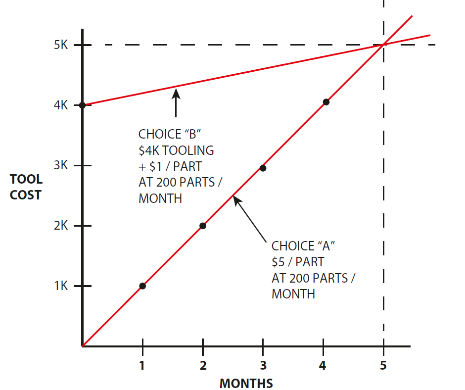

40723106 <<
Previous Next >> 40723134
40723121
翻譯
話題 --- topic 1
第一章 成功的設計
1.1設計指南
本章為您介紹了設計用於電子產品，並定義了“成功的設計”。我們將討論設計師在設置產品需求中的角色，其中設計師適應了整個產品開發圖，溝通，以及開始設計時要考慮的初始因素。在開始之前，讓我們簡要定義一下我們談論“電子產品。” 它是其中裝有電路板的產品，通常具有一些輸入/輸出設備，例如LCD。電子產品的例子包括手機，數碼相機和超聲波牙刷。電子產品外殼是包圍並支撐電路的物品板。外殼使設備對消費者可用。外殼出於多種原因，這是必要的–保護電子設備（電路板和LCD）從環境或物理顛簸（例如掉落產品）。機箱可通過按鍵或按鈕訪問設備的輸入信息也許，並允許從設備傳輸信息。外殼提供結構，以便支持和保護電路板邏輯。已開發出一些非常有效的產品外殼的示例近年來出現的是Apple iPhone 7或HP Spectre筆記本電腦（兩者2016）。從本質上講，一種成功的外殼設計將是設計已符合產品的書面規格書spec）並已在設置的成本和時間參數內完成。現在讓我們開始探索-設計這些機箱的過程。
1.2定義整體團隊
本節的目的是為了表明工程學（和機械工程學）特別是）並非自行設計產品；他們肯定是一個球隊。整個團隊的特徵是團隊可以是：
- 小號或大號
- 位於一個位置或分佈在全球
- 資源有限或可以訪問幾乎無限的資源
- 是否擁有最新工具
- 出於各種原因而實現目標的動機
整個工程工作包括多個設計方案學科。
這些學科包括：
- 電氣工程
- 軟件和固件工程
- 機械工程（包括結構和熱學）
- 工業工程
- 系統工程
因此，我們認識到機械工程只是過度設計的一部分電子產品的所有工程設計，並且做出的許多決定是與其他學科合作。當代產品設計應平衡在發布的產品的所有因素之間進行各種取捨產品。確實，整個工程工作（來自Sect的所有學科。1.2） 只是產品發布（銷售）的全部努力的一部分。除工程上的努力外，以下小組也做出了貢獻：定義每個組，然後定義機械設計的具體方式與該團體“互動”。所有這些都是為了強調
設計不是“在真空中”完成的，而是作為多任務產品交付的一部分球隊。市場營銷（包括來自銷售的投入）該組織負責產品定義，即定義客戶想要什麼以及什麼產品從客戶的角度來看。此“產品定義”通常採用工程將接受作為產品要求的文檔形式。營銷也有責任監督特定產品的適合程度進入公司（或公司部門）的整體產品線。EPE設計師與市場營銷部門互動，以定義產品如何uct將起作用，該功能如何向客戶（用戶）展示界面），以及產品對客戶的外觀（工業設計）。運營（製造）該組織負責整個流程單個組件的材料以及這些單個組件如何獲得製造，組裝並交付給客戶。如果工程負責是生產產品文檔，操作應該能夠文檔並獲得符合產品規格的產品。EPE設計人員通過對零件結構進行決策來與操作相交。陽離子技術，供應商（供應商）選擇以及質量/成本/外觀。測試（設計驗證）該組織負責測試原型設計和成熟的設計。這可以通過內部資源來完成機械設計小組（本身）或為此而設立的獨立小組功能。
EPE設計器通過執行或與測試功能相交查看測試結果。對產品進行的測試實際上是產品的一部分-uct要求文件（PRD），並且必須證明產品通過該文檔中定義的測試。例如，如果珠三角聲明某產品必須承受一米高的跌落，然後必須定義一個陳述注意事項的測試
如：
- 單個物品有多少滴（測試中）
- 物品的撞擊面或角落
- 進行測試的環境（例如環境溫度）
- 統計問題（例如必須通過測試的單個項目數）
- 測試順序（單元將進行的各種測試中）
- “生存”的定義（測試後功能或外觀的程度）
質量控制/質量保證該組織確定是否單個零件（或整個組件）的可接受極限符合標準均在個別產品規格（附圖）和estab-中指定制定了總體企業標準。質量控制將與戰術有關情況下，（公司）質量保證將更關注戰略
悲慘的情況。大多數公司都有控制和監控的各種方式重視產品質量，並肯定會引起客戶滿意和服務問題。EPE設計人員通過在其文檔中指定文檔來與該組織相交提及每個部分的可接受性極限，並可以包括裝配-蒼蠅。通常，可接受性限制採取以下形式：
- 圖紙公差中指定的尺寸（幾何）控件
- 圖紙上註明的材料和鍍層規格
- 圖紙上規定的外觀缺陷排除標準
- 功能規格如圖紙所示
- 確定零件文檔某些方面的“關鍵”性質。
服務該組織負責維修，保修和退貨。產品功能。它們有助於確定現場問題的解決方案，設備。EPE設計師通過合理的設計與該組織相交產品的拆卸和維修過程。當然，具有設計的高可靠性將減少維修的理由。也可以尋求確定濫用產品的方法。
項目管理該組織負責跟踪以下項目：
- 時間分配–遵守約定的最後期限
- 資源分配
- 優先級管理（針對單個項目以及與之競爭的項目相同的資源）
EPE設計器通過報告對EPE的估計與該組織相交機械零件責任的所有單獨行項目的時間和資源。首先是產品概念化，設計，原型製作，測試和設計最終發布文檔中的內容。時間和資源的估計是在達到里程碑時更新。高層管理人員包括在該組中的任何人誰負責項目，並且需要了解該項目。將提供項目更新在項目期間的特定時間加入該小組。高層管理人員將提供對項目的領導力和遠見。EPE設計器以間接方式與高層管理人員相交。項目狀態的報告在任何時候都是相關的，通常是通過專案經理。
1.3產品要求
確定成功是滿足（或超越）要求的問題。項目。這是一個簡單的聲明，但實際上在相互關聯方面非常複雜方面。如果項目達到了目標，則可以確定為成功。這些目標可以是在以下（一個或多個）書面文件中解決。產品需求文檔（PRD）該文檔可以有多種形式名稱（因公司而異）。基本上，這是嘗試的“合同”指定產品的基本功能。它可以像幾個參數一樣簡單圖還是極其複雜的。
它可以包含：
（a）產品對客戶的成就的描述-通常並沒有確切指定的產品將如何工作。也就是說，有關“如何從這裡到達那裡”並不明確。此說明在“最終產品的外觀”而不是“內部工作原理”的細節ings。” 後續文件（或規格）也可以指定產品。同樣，珠三角會在市場營銷和工程師之間達成協議，關於產品將是什麼。PRD的內容詳細信息可能有所不同。這是（應）在項目過程中隨著要素的修改而更新或添加到。在每次整體產品審核時，應在以下方面進行比較：設計如何符合RD。
（b）產品如何與客戶互動的說明。這個會包括：
如何向客戶顯示信息或信息將如何顯示從客戶那裡獲取產品。這可以是視覺，聽覺或觸。
- 產品的各種接口，例如連接器，開關或按鈕。
- 用於向客戶提供信息的標籤或圖標。
（c）產品各個組成部分的說明。也就是說，如果產品（正在設計的產品）需要其他設備或電纜才能起作用在較大的系統中，則將對“系統”的各個部分進行描述需要描述。因此，人們將需要準確地 “劃定邊界”什麼這個產品（正在設計）是。到底什麼是“可交付成果”？顧客？
（d）表明產品的最終美學（外觀）。顏色，特克斯實體和工業設計通常都非常詳細。
（e）產品將在其中運行和存儲的環境的清單。這包括溫度，衝擊，跌落，振動，濕度，進水量保護，運輸條件，海拔高度和特定的腐蝕性氣氛。
（f）產品需要通過的任何標準的清單。這既包括安全和監管標準，例如美國保險商實驗室（UL）安全，符合聯邦電磁通訊規範（FCC）干擾（EMI）以及數百種其他合規標準這是當今設計界的重要組成部分。其中一些標準是國家/地區具體而言，而其他人則在全球範圍內被接受。顯然，使用醫療，食品或兒童玩具時，將進行嚴格的測試通過標準。內部測試報告這些表示積極的測試結果。這些是結果完成測試以顯示珠三角上的要求已通過。如果尚未通過測試，則將啟動行動計劃以改善產品並進行進一步測試。初始客戶的報告這是“ alpha”或“ beta”測試，其中客戶反饋是正面還是負面。希望客戶變得可衡量產品的價值。何時可以對產品進行合理的改進此“實際”反饋是可用的。“ Alpha”測試通常使用內部人員在模擬實際客戶，而“ beta”測試是通常在發貨到實際（付款）之前與現有客戶進行顧客。
1.4草繪與細節
EPE設計人員必須知道何時在以下兩種模式之間切換：
• 素描或頭腦風暴：這是一個非常快速的構思階段。通常完成用鉛筆（請勿使用橡皮擦；這會減慢思考過程）。沒有什麼是詳細-所有這些似乎都完全適合這些草圖。規模並不是真的很重要ant 稍後再說。獲得了其他人的反饋。速度是這裡的重點 設計師在紙上有了很多選擇，因此可以決定幾個選擇的缺點。還有哪些其他選擇定向？起來嗎 下？側身？
• 細部化：即提供“一定數量”的細部。細節量所需要的取決於情況的嚴重性或獨特性。在裡面草圖（階段），一切正常，您已經“遮蓋了”可能絆腳石。您這樣做是為了加快整個設計過程，但是現在，在詳細信息模式下，需要進行更嚴格的分析。在“詳細模式”下，您可以準確地設計出（更多）設計中的一些關鍵部分，設計師將其視為“交易突破者”。細節通常需要CAD設計才能提供真實的幾何圖形並根據情況進行縮放。再次，設計評論可能是至關重要的可以繼續快速走下同意的設計道路。我想繼續討論基本佈局，假設我們正在設計一個全新的設計。許多概念將適用於延續或修改設計。另外，我想繼續進行設計彷彿我們仍處於“草圖階”。
1.5設計評論
以及在“草圖”和“詳細”模式之間來回切換（以上），設計師需要對何時讓其他人加入設計團隊具有紮實的感覺審查或評論他們的設計（無論設計處於什麼階段）。一些這些設計評論非常正式，而其他設計評論可能非常正式非正式的。正式設計評審通常是按照項目中計劃的里程碑進行的時間表。他們包括設計團隊的特定成員，並且具有明確的標誌-被那些成員關閉。非正式的設計評審是偶爾和/或自發進行的。可以是就像設計師轉到下一個辦公室並要求同事“接看看這個”或召集設計師感覺的幾個人之間的簡短會議足夠接近設計問題或具有類似經驗設計。
關於設計評論的一些一般性評論：
1.參加會議，並註意參加會議的人。
2.（至少，粗略地）記錄所提出的所有（相關）問題。
3.可能邀請不熟悉基本設計的人參加設計評審設計。他們可能是來自不同職能部門或部門的人員公司。有時，此人可以在問題上添加不同的“觀點”，例如他們從不同的角度看待它們。
4.簡要回顧設計的主要目標。
5.設計者已經考慮了提出的一些想法；那是很好，請按照您的原理快速進行。
6.有些想法（最初）似乎沒有價值或不“切合實際”。只是注意他們繼續前進；您可能稍後會看到該值。
7.您將從設計審查中獲得價值–如果您是向它“開放”。感謝所有相關人員，因為他們為您提供了見解和經驗。
- 將您在會議上的筆記發布給與會人員和會議記錄。整個項目團隊。這將記錄您和其他人要採取的進一步行動，在設計上取得進展。要求您的設計提供更多意見審核小組。
1.6溝通
溝通是設計成功的必要條件。那句話待命本身，但值得進行更充分的討論。
1.6.1溝通目的
交流的目的是傳達有關設計的信息。這是所需，因為信息可提供問題的答案，將設計記錄為它目前存在，並記錄了設計的演變。溝通可以被書面，拍攝或口頭表達。
書面文件的形式為：
- 規格
- 圖紙
- 項目會議記錄/時間表
- 筆記本中的筆記
- 特定於項目或程序的電子郵件（任何數字通信）
電影文件是項目程序，測試和事件。口頭交流是將項目推進到完成狀態。所有重要的口頭交流都必須以書面形式進行表格，以便項目的所有成員都可以查看這些通訊。
1.6.2溝通的價值
良好的溝通將使項目更加成功。良好的溝通
具有以下屬性：
- 準確–信息真實，並有測試/文檔支持。
- 簡潔–信息直截了當，沒有過多的措辭。
- 分佈式–分發給所有需要信息的人員。
- 快速-信息迅速傳播。
- 提供解決方案–提出解決方案的方法可以使解決方案更加生動處理。
1.7工程經濟
如果不討論有關成功的設計的任何章節，就無法完成。工程經濟學的基本原理。“花什麼錢”是至關重要的幾乎所有努力都需要考慮。在許多產品設計中，它將是產品成敗的主要原因。章節4將包括關於成本與時間與規格之間的權衡，但現在，讓我們開始討論，說明EPE設計人員必須具備成本能力信息和一些收支平衡分析。在參考文獻中 [1個]，其中指出“如果一個Engi-指導項目是要成功滿足人類需求，因此必須進行設計和操作既保證了物理上的可行性，又保證了經濟上的可行性。”由於成本是如此重要，因此設計師需要：
1.注意什麼成本目標（對於單個零件還是整個零件）組裝）用於設計。
2.注意所設計零件的材料和工藝選擇。EPE設計者有責任提出各種選擇通過（也許）在功能上的折衷來實現（或降低）成本目標。設計人員在任何情況下都不應在任何安全考慮上妥協。必須將所有選項清楚地呈現給管理層，以便進行權衡可以徹底確定。這是最重要的創造力元素之一EPE設計人員為產品的整體設計帶來的便利。
3.提出適用於產品和工藝的解決方案。uct處於其整個生命週期中。某些解決方案可能更適合早期生產（上市時間非常關鍵）比成熟生產。
4.根據訂購的適當數量提供成本信息，返回項目團隊，以便使這一重要指標始終眾所周知。
讓我們來看一個例子。如第一章所示。4，是否選擇“工具”的選擇提到一部分。可以通過以下選擇來分析此類問題：（每種情況下每月需要200個零件）
- 選擇A：供應商A的非工具零件成本為5.00美元
- 選擇B：設計工具零件，並讓供應商T製作工具。估計
成本：加工零件成本為$ 1.00，加工成本為$ 4000.00
在什麼時候模具成本和新零件成本將等於舊的部分成本？這就是所謂的“收支平衡”。
答：這很容易計算或繪製（見圖 1.1）：
($5 / part × "M" months × 200 parts /month) = ($1 / part × "M" months × 200 parts /month)+ $4000
“ M”顯示為5個月。因此，選擇B（工具化版本）以使用Choice A（非工具版本）實現“收支平衡”。
ChoiceA = $5 / part ×200 parts / month×5month = $5000

5個月後，工具零件Choice B的總成本將減少。顯然，如果產品生產5個月或更長時間，我們將選擇對零件進行加工。
但是，上述“經濟現實”實際上有一些複雜之處。
選項B的費用（上述）不包括：
1.設計和記錄工具零件的成本。
2.競標該工具並確定供應商T是最佳工具的成本供應商。
3.對工具零件進行原型製作的成本（在批准工具圖紙之前部分）。
4.批准工具零件的第一篇文章的成本（我們將在此處假設最初的第一篇文章已獲批准–希望不需要修改工具因為這將是額外的費用）。
5.測試工具零件的成本（作為未工具零件的替代品）。
6.“用完”未使用工具的零件並切換到使用工具的零件的成本。
（應將此零件所在的裝配體的日期編碼為註釋轉換？）
7.模具費用。也就是說，工具的成本為$ 4000實際價值超過$ 4000。讓我解釋。如果不將$ 4000美元提供給工具製造商，那將是
為公司賺取利息。“單利”計算將具有賺取的$ 4000利息為（每年2％）：$ 4000×0.02 / 12個月×5個月（收支平衡時間）= 33美元。
但是，這裡的問題可能是：公司可以用$ 4000做什麼呢？創建$ 33的單利？也許他們可以將其投資到開發中可能產生更多收益或將其花費在其他工具上的新產品在另一個可以帶來更多收益的項目上。是的，這並不簡單。在上面的七個項目中，設計和記錄工具零件的成本不是微不足道的錢。如果設計，記錄和製作原型需要1週的時間，工具零件可能會使公司在設計者的時間內花費$ 1000（例如，$ 1000 /週工資）。大多數公司不會在其“突破-甚至”分析，但在某些情況下值得考慮。設計師需要熟悉的另一個術語是“投資回報-ment”或簡稱為ROI。這類似於所述的“收支平衡點”之前，但提出的問題略有不同。在同樣的問題
以上（選擇A和B），問題將提出為：
4000美元的工具降低5美元零件的單價的投資回報是多少？一旦新的加工件價格已知（$ 1），數字已訂購（例如，month = 200 parts / month），則ROI = 5個月。所以，基本上回報$ 4000美元的投資將持續5個月。
章節總結
第1章介紹了設計電子產品外殼的方法。由於我們並不孤單，因此本章還定義了其他主要群體參與設計及其通常的功能。本章介紹了我們關於如何將設計視為“成功”以及如何實現設計（或超過）（定義的）產品要求。本章將帶您通過幾個“設計方案”，我們將獲得所有從“完全定義”的規範到簡約的規範。我們定義了在“頭腦風暴”或“高度關注”中進行設計的方式詳細”模式。設計評審和良好溝通渠道的需求在一般的設計過程中進行了討論。最終，工程經濟學的主題開始。這將是進一步在第一章中進行了放大。
40723106 <<
Previous Next >> 40723134